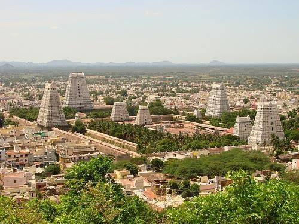

THIRUVANNAMALAI
ANNAMALAIYAR TEMPLE

The history of the Tiruvannamalai temple is a blend of ancient legend and centuries of construction, with the site believed to have originated around the 7th century. According to mythology, Lord Shiva appeared as a fiery pillar of light atop the Arunachala hill here, a legend central to the temple's identity. Over time, the temple complex has been expanded by various dynasties, including the Cholas, Pandyas, Vijayanagar kings, and Nayaks, with its architecture reflecting these contributions.